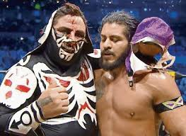

Nombre real: Jorge Luis Alcántara Bolívar
Fecha de nacimiento: 30 de abril de 1984
Lugar de nacimiento: Ciudad de México, México
Alias: El Hijo del Fantasma, Santos Escobar
Heredero del Fantasma, luchó en CMLL y AAA. En WWE ha destacado como Santos Escobar en NXT y SmackDown.
Campeón de peso crucero en WWE, fundador del grupo Legado del Fantasma. Tiene estilo técnico y rudo.
Hijo del Fantasma. Representa la nueva generación de luchadores mexicanos con éxito internacional.